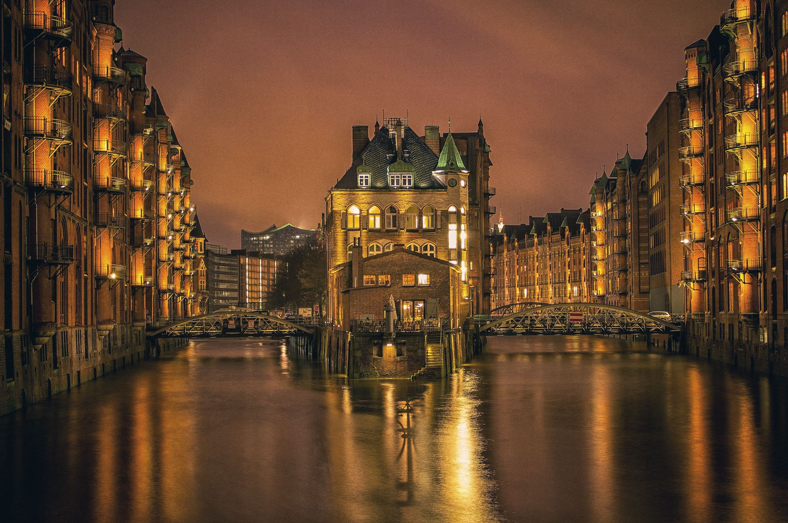

Angaben gemäß Impressumspflicht
Verantwortliche Person
Matthias OhlroggeJeans House Ohlrogge GmbH & Co. KG
Wandsbeker Allee 68
22041 Hamburg
Kontakt
Telefon: 040 – 689 158 30
E-Mail: jeanshouse.hamb@t-online.de
Register / Ort
UID: DE228278179
Bildnachweis (Original)
© istockphoto.com
© fotolia.com
Bildnachweis (Redesign)
Ladenfotos und Marken-Logos von hamburg-jeans.de. Stimmungsfotos von Unsplash (Unsplash-Lizenz):
- buegel.jpg – Foto: Jason Leung, Unsplash
- denim-dunkel.jpg – Foto: Saifee Art, Unsplash
- drei-feld.jpg – Foto: Land O'Lakes, Inc., Unsplash
- frau-fluss.jpg – Foto: Valentina Kondrasyuk, Unsplash
- frau-muetze.jpg – Foto: Mehrpouya H, Unsplash
- frau-stadt.jpg – Foto: Danny Lines, Unsplash
- freundinnen.jpg – Foto: Ionela Mat, Unsplash
- fuesse.jpg – Foto: Rosalind Chang, Unsplash
- haende-etikett.jpg – Foto: S O C I A L . C U T, Unsplash
- haende-stoff.jpg – Foto: DEAD GOOD LEGACIES, Unsplash
- hand-jeans.jpg – Foto: Brock Wegner, Unsplash
- hero-frau.jpg – Foto: Nick Karvounis, Unsplash
- hero-mann.jpg – Foto: Adrian Dascal, Unsplash
- hh-blick-wasserschloss.jpg – Foto: Illia Panasenko, Unsplash
- hh-bruecke.jpg – Foto: Djordje Djordjevic, Unsplash
- hh-hafen-sonne.jpg – Foto: Patrick Rosenkranz, Unsplash
- hh-speicherstadt-abend.jpg – Foto: Kirill Prikhodko, Unsplash
- hh-speicherstadt-gold.jpg – Foto: Julia Solonina, Unsplash
- hh-speicherstadt-nacht.jpg – Foto: Patrick Baum, Unsplash
- hh-strasse-abend.jpg – Foto: Sebastian Puskeiler, Unsplash
- hh-strasse-schatten.jpg – Foto: Casey Romkes, Unsplash
- jeans-dunkel.jpg – Foto: Artur Ament, Unsplash
- kabine.jpg – Foto: Laura Durán, Unsplash
- knopf.jpg – Foto: Pesce Huang, Unsplash
- look-cropped.jpg – Foto: Alicia Petresc, Unsplash
- look-skinny.jpg – Foto: engin akyurt, Unsplash
- look-weit.jpg – Foto: Madison Compton, Unsplash
- mann-herbst.jpg – Foto: Pedram Normohamadian, Unsplash
- mann-jacke.jpg – Foto: Brock Wegner, Unsplash
- mann-wand.jpg – Foto: Brock Wegner, Unsplash
- massband-licht.jpg – Foto: josh A. D., Unsplash
- naht.jpg – Foto: engin akyurt, Unsplash
- paar-jacken.jpg – Foto: Evelyn Céspedes, Unsplash
- paar-sonne.jpg – Foto: Allen Taylor, Unsplash
- paar-wand.jpg – Foto: Aleksandra Sapozhnikova, Unsplash
- rollen.jpg – Foto: Michaela St, Unsplash
- schaufenster.jpg – Foto: Kouji Tsuru, Unsplash
- stange-hell.jpg – Foto: TuanAnh Blue, Unsplash
- stange-warm.jpg – Foto: Ian ODonnell, Unsplash
- stapel-etiketten.jpg – Foto: TuanAnh Blue, Unsplash
- stapel-gross.jpg – Foto: Roozbeh Eslami, Unsplash
- stapel-regal.jpg – Foto: Waldemar Brandt, Unsplash
- stapel-tisch.jpg – Foto: Waldemar Brandt, Unsplash
- stapel-weiss.jpg – Foto: Claire Abdo, Unsplash
- tasche.jpg – Foto: Markus Spiske, Unsplash
- tasche-leder.jpg – Foto: Malen Almonacid Trossi, Unsplash
- zwei-blumen.jpg – Foto: Nguyen Thu Hoai, Unsplash
Hinweis: Diese Seite ist ein Schulprojekt und ein inoffizielles Redesign. Die Angaben wurden von der Original-Website hamburg-jeans.de übernommen.